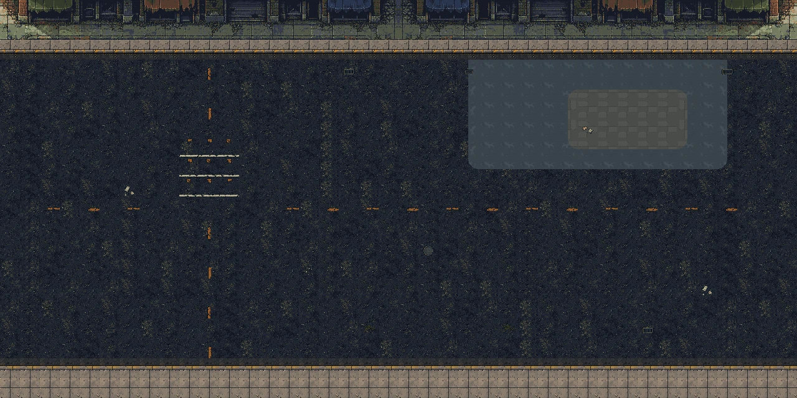

Chạy bản kết hợp · Mở map trong Tiled
Giữ đường, vỉa hè, mặt tiền và chi tiết của map mặc định. Phía đông có sân concrete/paving, ba thùng hàng dùng pipeline prop thật và lối ra cũ. Profile Survivor full-body/Walker completion được dùng chung.


Mốc approach chụp khi lối ra đi vào camera thật. Các ảnh là snapshot của smoke có di chuyển/bắn, không thay video hoặc người chơi đánh giá chuyển động. Bản mặc định chưa bị thay.
Report kỹ thuật · Giữ artwork/layers · Mask/alpha/atlas · Lượt chạy